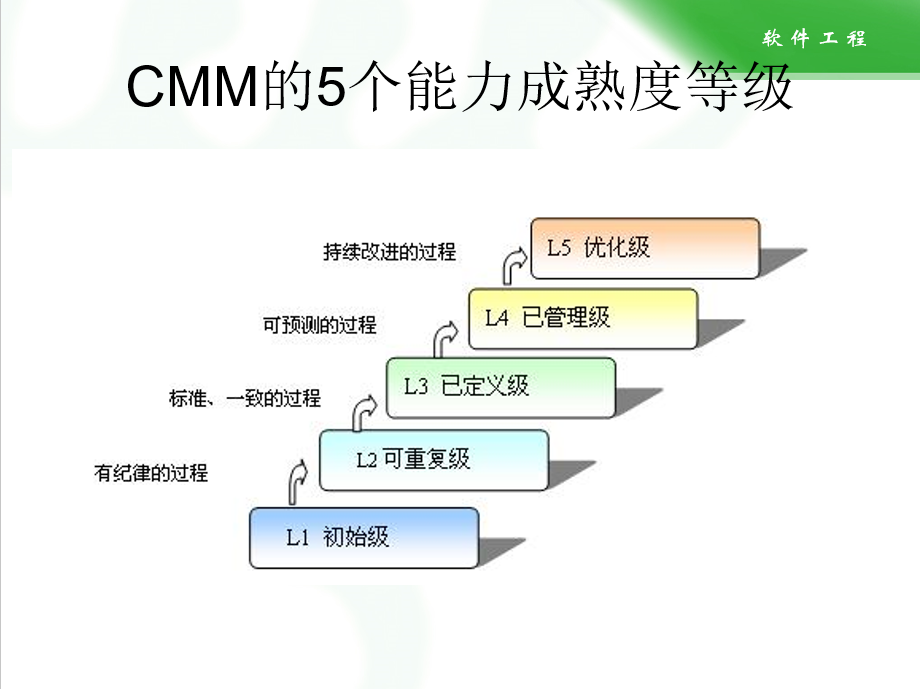
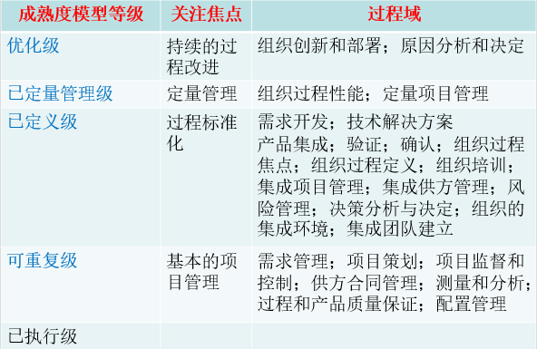

软件工程导论期中复习（第一第二章）
呜呜呜呜呜呜呜
第一章、软件工程介绍
主要复习内容：软件工程的概念、软件工程层次图（重要）、软件危机与软件工程的关系、软件神话一些错误认识
软件工程的概念（过程，方法和工具）
Q1：软件工程的定义是什么？
C1：将系统化的、严格约束的、可量化的方法应用于软件的开发、运行和维护，即将工程化应用于软件。
Q2：软件工程的三要素分别是什么？
C2：过程、方法和工具
（1）过程
软件过程是工作产品构建时所执行的一系列活动、动作和任务的集合。
过程框架定义了若干框架活动，为实现完整的软件工程过程建立的基础。
通用过程框架包含以下五个活动：
沟通、策划、建模、构建、部署
（2）方法：为构建软件提供技术上的解决方法（如何做）
（3）工具：为过程和方法提供自动化或半自动化的支持。
软件工程层次图

Q3：软件工程的根基是什么？
C3：支持软件工程的根基在于质量焦点
Q4：软件工程的基础是什么？
C4：软件工程的基础是过程层，它将各个技术层次结合在一起，使得合理、及时地开发计算机软件成为可能。
软件危机
Q5：什么是软件危机？
C5：软件危机是指在计算机软件的开发和维护过程中所遇到的一系列严重问题。
Q6：软件工程是什么时候提出的？
C6：软件工程主要是针对20世纪60年代的软件危机而提出的
Q7：软件危机的具体表现有哪些？
C7：
（1）成本和进度估计常不准确
（2）用户的满意度常不高
（3）质量往往靠不住
（4）软件通常很难维护
（5）文档资料不完整、不合格
（6）软件的成本高，所占比例逐年上升
（7）软件开发生产率提高的速度慢。
Q8：产生软件危机的原因有哪些？
C8：
（1）客观原因：软件缺乏可见性，管理和控制其开发过程相对困难。
软件大多规模庞大，复杂性随着规模以指数速度上升。
（2）主观原因：错误的认识与做法（重点）
①忽视软件需求分析的重要性：急于求成，仓促上阵
②认为软件开发就是写程序
③轻视软件维护
软件神话
Q9：软件神话都有哪些？
C9：管理神话、用户神话、从业者神话
第二章、过程模型
主要复习内容：掌握五个最基本的框架活动：沟通、策划、建模、构建和部署；了解什么是CMMI；理解瀑布模型；增量模型；RAD模型；原型模型；螺旋模型；统一过程 –适用范围、特点、优缺点
过程框架
Q10：什么是过程框架？
C10：将整个软件过程再进一步细分为各个相对独立的功能块，即过程框架
Q11：通用过程框架包括什么？
C11：
（1）沟通：与客户之间的交流与写作
（2）策划：为后续的软件工程工作制定计划
（3）建模：包括分析与设计
（4）构建：编码和测试
（5）部署：软件交付用户，用户对其进行评估并反馈意见
CMMI
Q12：什么是CMMI？
C12：能力成熟度模型集成（CMMI），用于预测软件开发组织所开发的系统和软件工程能力，它定义了每一个过程域的“特定目标”，以及达到该目标所需的“特定实践“。
Q13：CMMI都有哪些能力成熟度等级？
C13：
Q14：每一级的关注焦点是什么？
C14：
瀑布模型
Q15：什么是瀑布模型？
E15：
C15：瀑布模型，也称为线性模型或传统生存周期，V模型
Q16：瀑布模型的适用范围是什么？
C16：
（1）通常发生在对一个已有系统进行明确定义的适应性调整和增强的时候
（2）对于一个新的项目，需求必须是准确定义和相对稳定的。
Q17：瀑布模型的优缺点是什么？
C17：
补充：
瀑布模型的缺点：
1.顺序太严格。实际工作经常是在多个环节之间来回反馈调整，而不是将一个环节完成后再继续前进。
2.产品在最后阶段才与客户见面，从心里学的角度讲有些考验客户。另外，如果此时才发现问题，需要改正，工作量将会很大。
3.效率可能不高。
增量模型
Q18：什么是增量模型？
E18：
C18：所谓增量，指增加的功能。即把一个软件所要实现的功能分为若干步，每一步实现其中的一块。在每一块中采用瀑布模型的方式，这样反复进行的工作，即称为迭代。
Q19：增量模型的适用范围是什么？
C19：
（1）初始的软件需求有明确的定义，但是整个开发过程不宜单纯运用线性模型
（2）迫切需要为用户提供一套功能有限的产品，在后续的版本再进行功能扩展和细化
Q20：瀑布模型的特点是什么？
C20：
（1）最重要的增量放在前面（第一个增量往往是核心产品）
（2）每次交付的增量产品都是可用的
（3）适合于功能可以划分，而且时间不紧迫的情况
（4）可以规避一定的风险。如有些技术还不稳定，可以放到后边。
Q21：增量模型的优缺点是什么？
C21：
RAD模型
Q22：什么是RAD模型？
E22：
C22：快速应用程序开发（Rapid Application Development）是一种侧重于短暂的开发周期的增量软件模型
Q23：RAD模型的适用范围是什么？
C23：适于工期紧张，又可细分功能，还要有合适的构件。
Q24：RAD模型的特点是什么？
C24：
（1）它是瀑布模型的高速变体，通过基于构件的方法快速实现。
（2）是一种侧重于短暂的开发周期的增量软件模型
Q25：RAD模型的缺点是什么？
C25：
（1）需要投入更多的人力
（2）各团队要紧密协作
原型模型
Q26：什么是原型模型？
E26：
Q27：原型模型的适用范围是什么？
C27：
（1）客户不能给出确切的要求
（2）开发人员对算法的效率、操作系统的兼容性和人机交互的形式不确定。
Q28：对原型有什么基本要求？
C28：
（1）体现主要的功能
（2）提供基本的界面风格
（3）展示比较模糊的部分，以便于确定或进一步明确，防患于未然。
（4）原型最好是可以运行的，最少要在各主要功能模块之间能够建立相互连接。
Q29：如何处理原型？
C29：
（1）抛弃型：在获取的明确需求的基础上，重新设计与开发（成本较高，小公司慎用）
（2）演化型：在原型的基础上继续开发
Q30：原型模型的优缺点是什么？
C30：
补充：
优点：
1.能让人（开发者或客户）很快见到产品，有成就感。
2.能渐进地启发客户提出新的要求或任务。
缺点：
1.容易蒙骗客户，也可能由此给自己带来麻烦。
2.往往只为结果，而不考虑技术手段，为今后埋下隐患。
3.系统可能考虑不周全。
Q31：原型模型与增量模型有什么区别？
C31：（1）增量模型在开发以前基本能确定系统的需求，而原型开发适应于预先不太清楚系统的需求
（2）增量模型的反馈较少，而原型开发需要不断的大量反馈信息。
螺旋模型
Q32：什么是螺旋模型？
E32：
Q33：螺旋模型的适用范围是什么？
C33：适合于大型软件的开发
Q34：螺旋模型的特点是什么？
C34：
（1）结合了原型的迭代性质和瀑布模型的系统性和可控性特点
（2）引入了非常严格的风险识别、风险分析和风险控制
（3）早期迭代可能是一个理论模型或原型
Q35：螺旋模型的优缺点是什么？
C35：
统一过程
Q36：什么是统一过程？
E36：
C36：统一过程试图将传统软件模型（惯例软件模型）和敏捷过程模型的优点结合起来，即统一起来，统一过程包括：起始，细化，构建，转换，生产等步骤
Q37：螺旋模型的优缺点是什么？
C37：